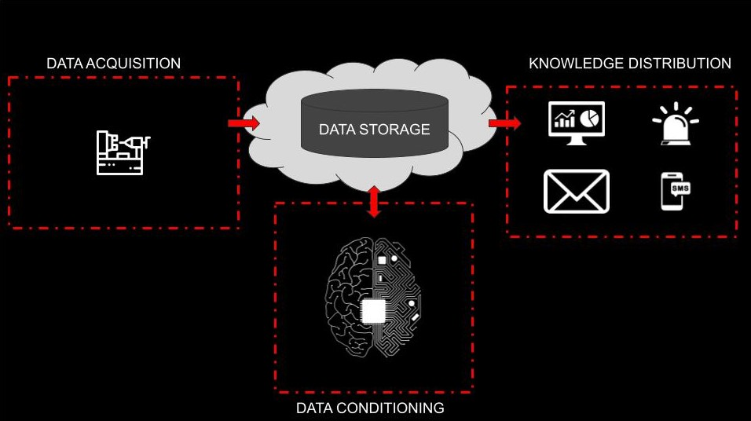
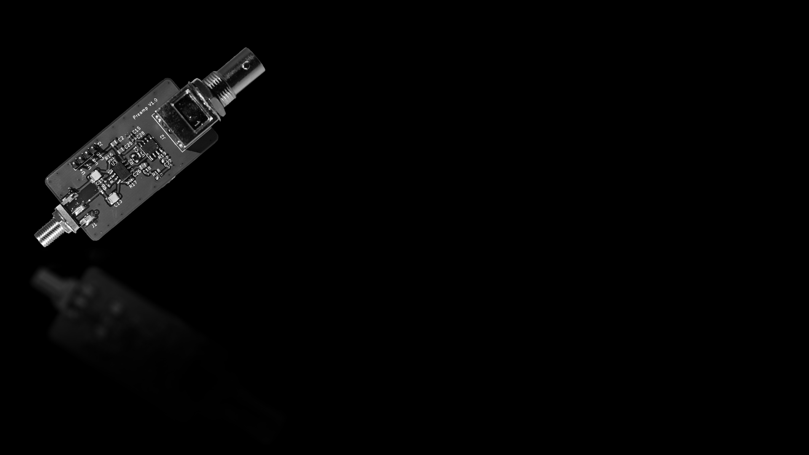
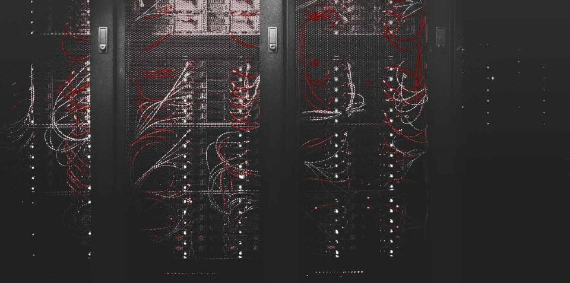

WITNESS · by skAInet
WITNESS learns how your machines normally run and tells you what deviates.
WITNESS is hardware and software for condition monitoring that runs entirely inside the plant. skAInet is the startup building it, and we are looking for investors to bring it to market.
WITNESS
Every asset deserves a witness. Modular, on-prem condition monitoring built on standard PoE: measurement devices at the asset, analytics in your own server room, findings labelled by your maintenance staff.
The idea behind WITNESS
Every movement leaves a fingerprint.
When a motor moves a railway point, a slide gate or a valve, the power it draws follows a pattern. As the mechanics age, the pattern changes, long before anyone can see or hear it.
WITNESS records that pattern at every movement, learns what normal looks like for each single asset and reports what deviates. The maintenance staff, who know the plant best, label the findings, and the models learn from their labels.
Maintenance then follows the condition of the machine instead of the calendar.

How WITNESS works
Measured, learned and decided inside the plant.
Measure
One cable per device.
Our measurement devices sit at the asset and record power, temperature or thermal images. A single standard PoE cable carries power and data, which keeps installation simple.
Collect
Over the network you already have.
Edge computers on the shop floor power the devices, pre-process the data and pass it on over the normal company Ethernet. Third-party devices with a digital interface connect too.
Learn
No cloud required.
Storage, analytics and model training run on a rack in the customer's own server room. The data stays with the company that owns the machines, and so do the models.
Act
Knowledge, not data.
Anomalies, predictions of upcoming maintenance and efficiency estimates are written back to the systems the plant already runs, through openly documented interfaces. No vendor lock-in.



Where WITNESS applies
One WITNESS, many kinds of assets.
The same devices, the same rack and the same learning loop serve very different industries. What changes is the model.
Rail
Point machines: an early warning before a throw fails, and replacements that can be planned.
Water
Sluice and slide gates in water, wastewater and hydraulic engineering.
Process industry
Motorised valves that have to open and close when it counts.
Process plants
Air-fin coolers: infrared cameras show fouling as heat and tell the operator when to clean.
Industrial insurers
Continuously measured, physics-based condition data as a basis for risk assessment.
Your assets
Anything that moves, heats up or draws power in a repeating pattern can be learned.
For investors
We are a startup, and we are looking for investment.
skAInet is a pre-launch startup within the CDL Doha programme. WITNESS builds on what we learned in years of measurement and diagnostics work at Auto-Intern.
We develop the measurement hardware, the edge computers, the storage and the analytics ourselves. That is what lets WITNESS run entirely inside a customer's plant, and it is why we need capital: to take the platform from pilot installations to a product that ships.
The team
- Atiyeh Chatrsefid, CRO
- Stephan Bökelmann, CTO